Префектура Окинава · Ямбару · природа
Ямбару: лес природного наследия на севере Окинавы, водопад Хидзи и нелетающая птица куина
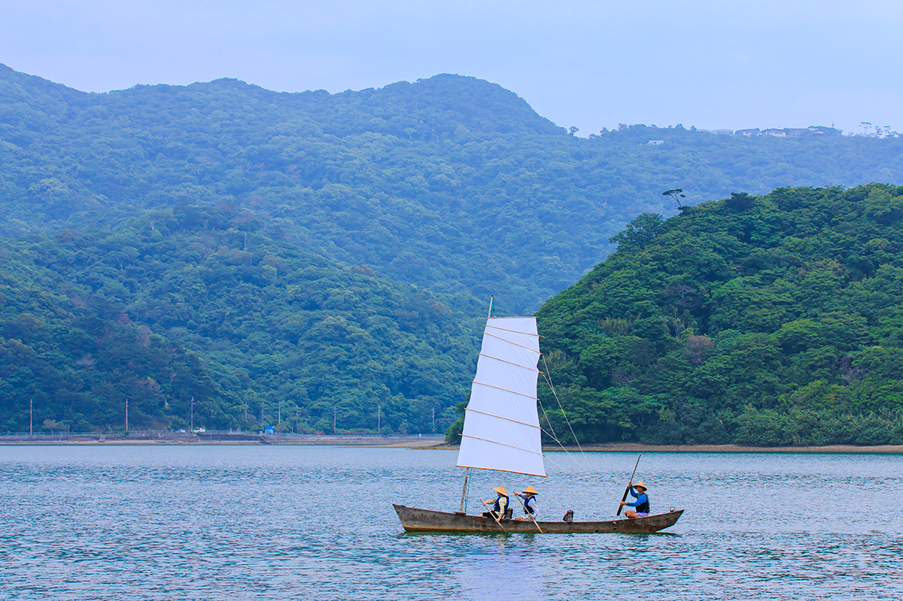
Ямбару называют север острова Окинава: горы, субтропический лес, чистые реки и деревни у моря. В 2021 году этот лес внесли в список всемирного природного наследия ЮНЕСКО, и здесь до сих пор живут птицы и лягушки, которых больше нет нигде на свете.
Где это
Ямбару: край гор и леса
«Ямбару» пишется иероглифами «горы» и «равнина» и означает «край, где тянутся горы и раскинулся лес». Так издавна называют север острова Окинава, крупнейшего острова архипелага Рюкю. Точных границ у Ямбару нет, обычно так говорят обо всём, что лежит севернее города Наго.
Сердце Ямбару составляют три самых северных села: Кунигами, Огими и Хигаси. Их горы покрыты субтропическим вечнозелёным лесом, часть которого входит в национальный парк Ямбару. 26 июля 2021 года северная часть острова Окинава вместе с островами Амами-Осима, Токуносима и Ириомотэ попала в список всемирного природного наследия.
На три села приходится 340 кв. км, из них 173 кв. км занимает национальный парк. Живёт здесь около 7800 человек. Лес покрывает больше 80% территории. В июле 2025 года в Ямбару открылся большой тематический парк, и к северу острова снова приковано внимание. Но главное здесь по-прежнему лес, долгожители и ремёсла.
Лес
«Лес чудес»: природа, какой она была до людей
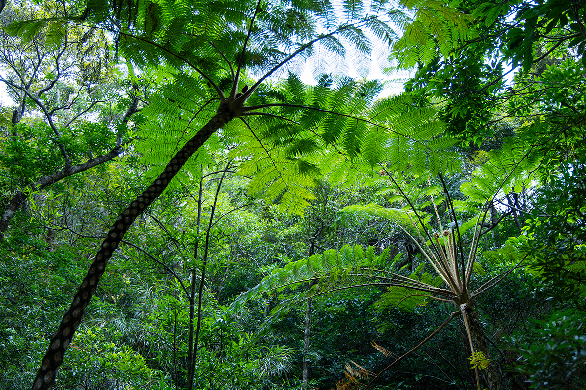
На этих широтах на планете обычно лежат пустыни и сухие степи: в субтропиках держится высокое давление и дождей мало. Остров Окинава окружён морем. С юга подходит тёплое течение Куросио, с материка дуют сезонные ветры, при встрече они дают дожди, и на острове растёт лес, где уживаются виды умеренного пояса и тропиков.
Главные деревья здесь каштанник сии и схима идзю. Сообщество из каштанника и рюкюского бадьяна занимает около половины леса. Весной, когда сии выпускает молодые листья, все горы становятся светло-салатовыми. Старые деревья с естественными дуплами служат домом для редких животных, например ямбарского длиннорукого жука и рюкюской длинношёрстной крысы. Хребты сложены мозаикой, словно смятая и снова расправленная фольга, и в бесчисленных ручьях между ними живёт своя жизнь.
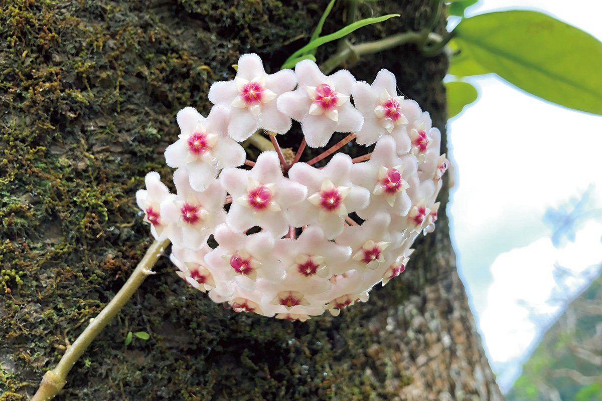
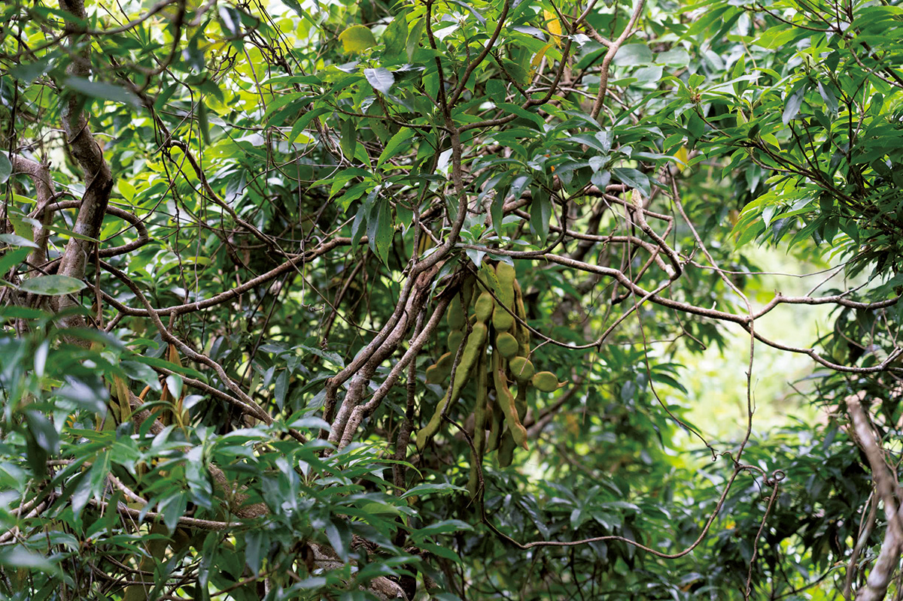
Три села занимают меньше 0,1% территории Японии, но здесь отмечено около половины всех видов птиц страны и около четверти её местных видов лягушек. Острова Рюкю много раз соединялись с материком и с основными островами Японии и снова отделялись от них. Крупных хищных зверей здесь не было, поэтому сохранились древние виды, например лягушки Намиэ и Хольста и рюкюская горная черепаха, а уже на острове появились новые: ямбару-куина, окинавский дятел ногути-гэра, птица символ префектуры, и певчая рюкюская малиновка.
Многие из них когда-то встречались южнее, до села Онна, а теперь живут только в трёх северных сёлах. Одна из причин в чужих видах. Около ста лет назад на юге острова выпустили мангустов, чтобы они ловили змей хабу и крыс. Мангусты размножились, двинулись на север и стали охотиться на куину: поймать её куда проще, чем змею.
История
Лес, который строил Сюри
Лес Ямбару веками кормил и согревал весь остров: в центре и на юге Окинавы гор нет. Со времён королевства Рюкю и почти до наших дней дрова, уголь и строевой лес везли только отсюда. Даже в самой глубине леса находят следы угольных печей, ямы для крашения рюкюским индиго и остатки жилищ.
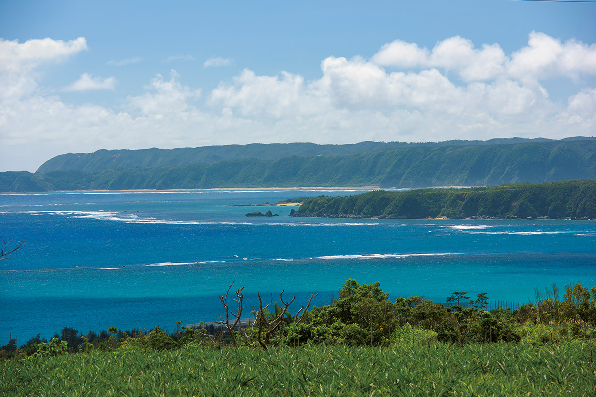
Когда строили и перестраивали замок Сюри, лес из Кунигами везли ко двору с песней «Сабакуи». Сегодня это рюкюский танец, его исполняют на праздниках и на сцене.
Из природных материалов здесь до сих пор делают вещи: ткань басёфу из волокон банана, корзины и мётлы из альпинии и бамбука. А село Огими, известное как деревня долгожителей, приезжают изучать гости из других стран.
Звезда леса
Ямбару-куина: бегает быстро, летать не умеет
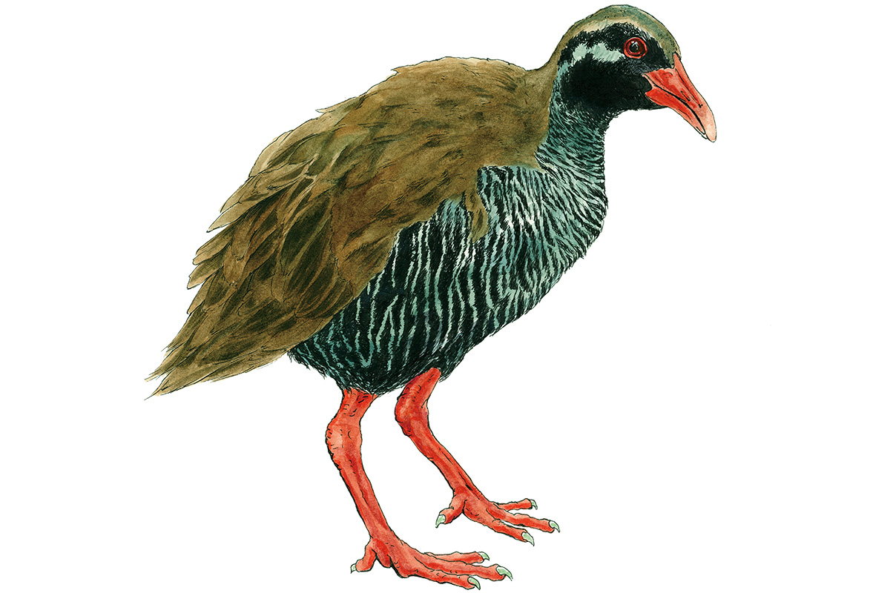
Ямбару-куина, или окинавский пастушок, попала на остров примерно 6000 лет назад. По меркам эволюции это недавно. В северных лесах её видели постоянно, поэтому, когда в 1981 году птицу описали как новый вид, все были поражены: никто не думал, что соседская птица окажется неизвестной науке.
«Пастушки перестали летать, когда оказались на острове. На островах Тихого океана их много, и почти все, кто поселился там, где нет хищников, выбрали жизнь без полёта. Летать тяжело, и птица, если может, остаётся на земле. В яйце случилась мутация, гены, отвечающие за развитие крыльев, почти исчезли, и птенцы вылупились уже с нерабочими крыльями»
зоолог
Гнездо куина устраивает прямо на земле из горстки сухих веток и листьев. Кладка из трёх-четырёх яиц, птенцы через несколько десятков минут после рождения уже ходят и сразу едят дождевых червей, которых приносят родители, и рано покидают гнездо. Спит куина всё же на дереве: в лесу водится змея хабу.
Длина птицы около 35 см, вес около 400 г. Питается дождевыми червями, улитками, насекомыми, ракообразными, плодами. В 2021 году их насчитывали 1500–1600.
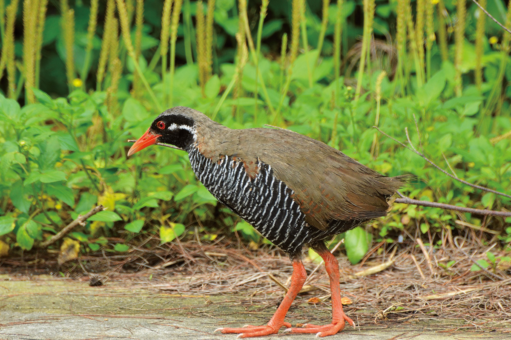
Нелетающую птицу легко ловят мангусты и одичавшие кошки. Вороны, которых в северном лесу стало больше, нападают на яйца и птенцов. Вырубка леса дробит места обитания, птицы гибнут под колёсами, вредят и туристы, которые подходят слишком близко ради снимка. Учёные следят за численностью, охраняют деревья, на которых куины ночуют, перестраивают опасные участки дорог, ловят мангустов и держат под контролем бродячих кошек. С тех пор как мангустов стали активно отлавливать, куин стало больше, а на случай резкого спада отрабатывают разведение в неволе и выпуск в природу.
Увидеть птицу вблизи можно в центре «Куина-но мори» в парке «Ада куина фурэай коэн». Здесь воссоздали её лес, и куина, которая в природе почти не показывается, ходит прямо перед посетителями.
«Куина-но мори»
- Адрес
- префектура Окинава, село Кунигами, Ада, 1477-35
- Телефон
- +81 980-41-7788
- Часы работы
- 9:00–17:00
- Выходные
- среда
- Сайт
- kuinapark.com
Тропа
Водопад Хидзи: час по лесной реке
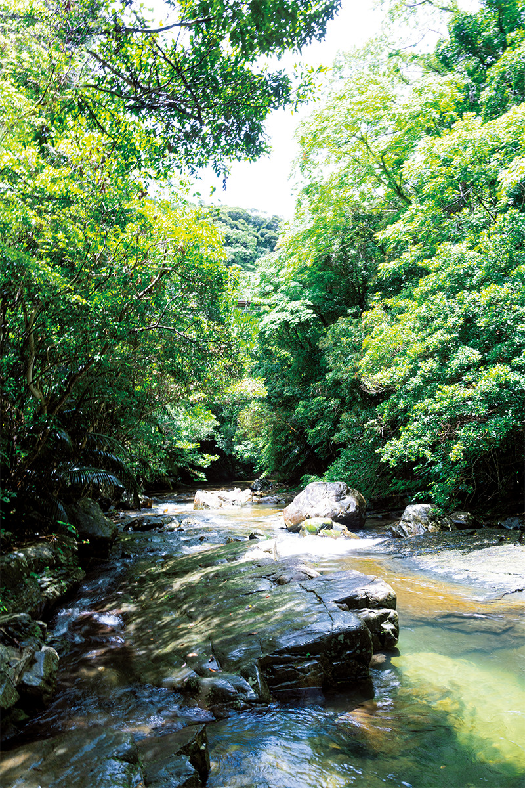
Хидзи-Отаки в селе Кунигами считается самым большим водопадом острова Окинава. Тропа от кемпинга до водопада занимает около часа в одну сторону, и это маршрут, который рекомендует само село. Мы шли с гидом, сертифицированным в Кунигами. Раньше она работала в министерстве окружающей среды и теперь занимается охраной леса.
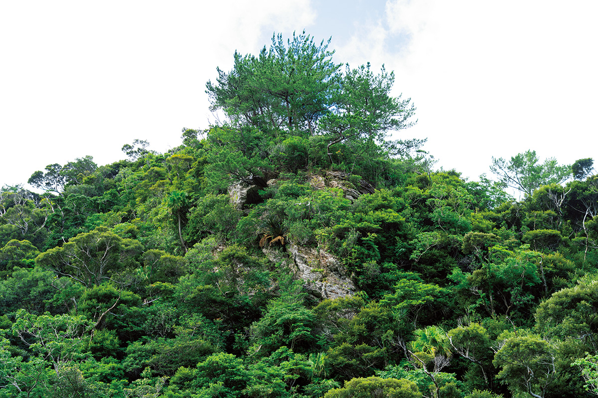
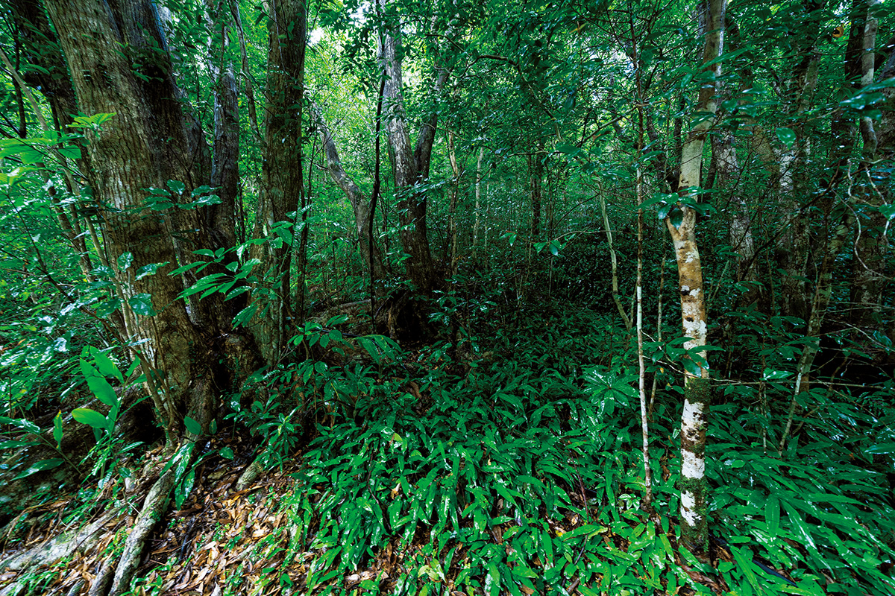
«На этой тропе встречаются птицы, земноводные, рептилии, ракообразные, а ещё видно, как люди и лес жили вместе: места поклонения, деревья, отросшие после рубки. В вечнозелёном лесу почти нет осенних красок, и смену сезонов заметить трудно. Но если прислушаться, о времени года расскажут голоса животных»
гид
Кроме водопада Хидзи в Кунигами есть скалы Дайсэкириндзан с причудливым рельефом и гора Юнаха-дакэ, высшая точка острова (выше девятой станции вход ограничен). В селе Огими водят к другому водопаду, а в Хигаси устраивают туры по мангровым зарослям.
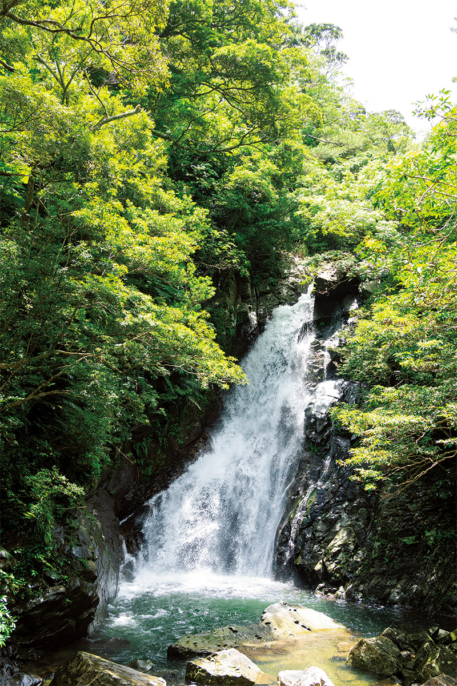
По дороге нам попались птенец рюкюской малиновки, ещё не знающий страха, и головастики рюкюской лягушки в лужах у водопада. На скале у самого водопада сидел пресноводный краб, по цвету не отличимый от камня: панцирь у него вырастает до 4 см, и всю жизнь он проводит у пресной воды.
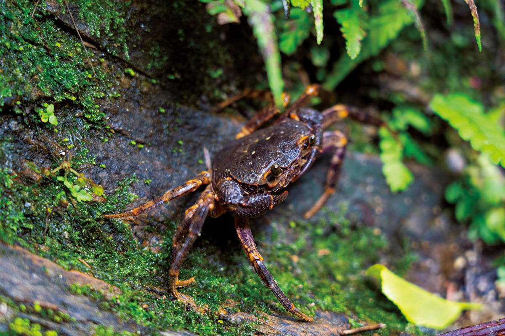
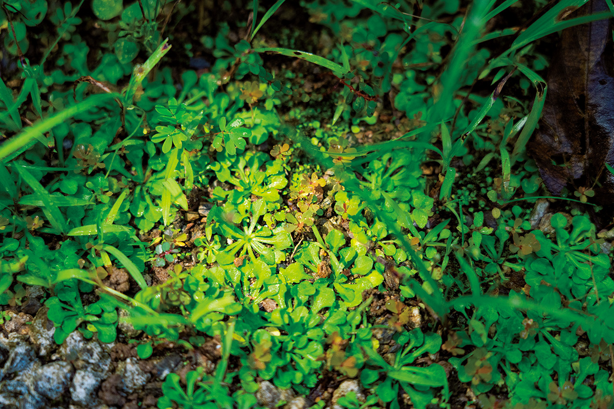
«Каждый день на дорогах гибнут куины и сухопутные крабы, которые идут к морю откладывать икру. Если помнить, что животное может выйти на дорогу в любом месте Ямбару, и следить за дорогой, можно спасти чью-то жизнь. Гид стоит у входа в природу. Давайте радоваться ей вместе»
гид
Куда поехать
Музеи и парки Ямбару
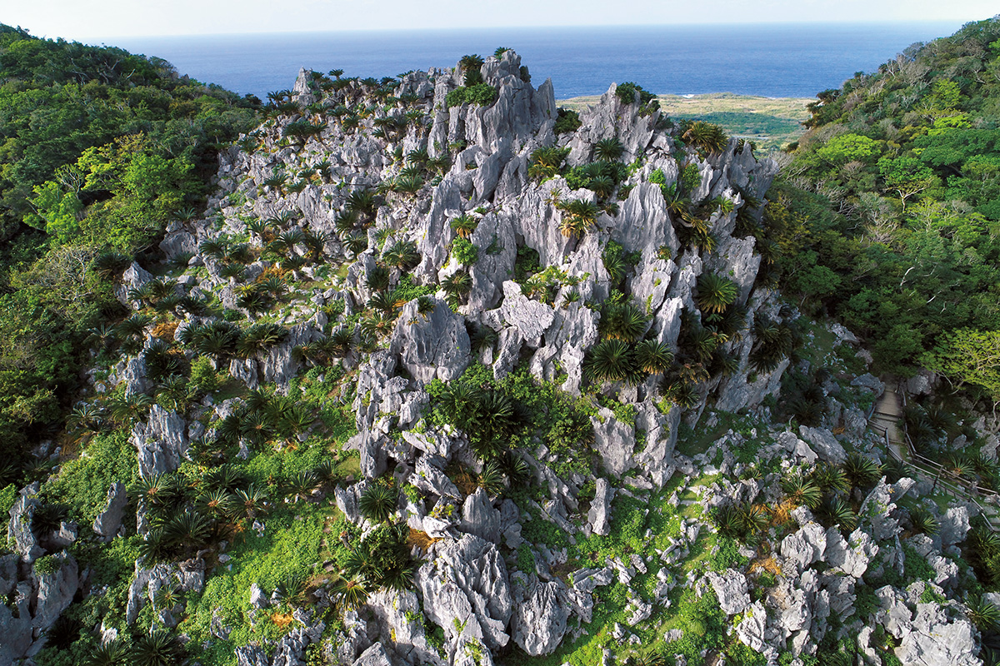
Дайсэкириндзан стоит в национальном парке Ямбару. Здесь находится гора Асимуи, которую считают первым священным местом Окинавы. Известняк веками размывали дожди, и получился лес каменных пиков, вокруг которого растут и живут виды, характерные только для Ямбару.
Дайсэкириндзан
- Адрес
- префектура Окинава, село Кунигами, Гинама, 1241
- Телефон
- +81 980-41-8117
- Часы работы
- 9:30–17:30 (вход до 16:30)
- Выходные
- без выходных
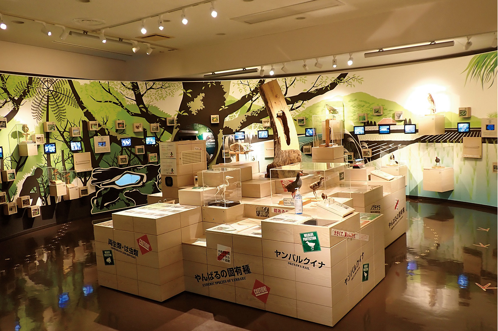
Центр охраны дикой природы Ямбару «Уфуги сидзэнкан» занимается охраной и изучением редких видов и управлением национальным парком. Здесь можно узнать о гибели животных на дорогах и о проблеме чужих видов.
«Уфуги сидзэнкан»
- Адрес
- префектура Окинава, село Кунигами, Хидзи, 263-1
- Телефон
- +81 980-50-1025
- Часы работы
- 10:00–16:30
- Выходные
- понедельник, праздники, День памяти павших (23 июня)
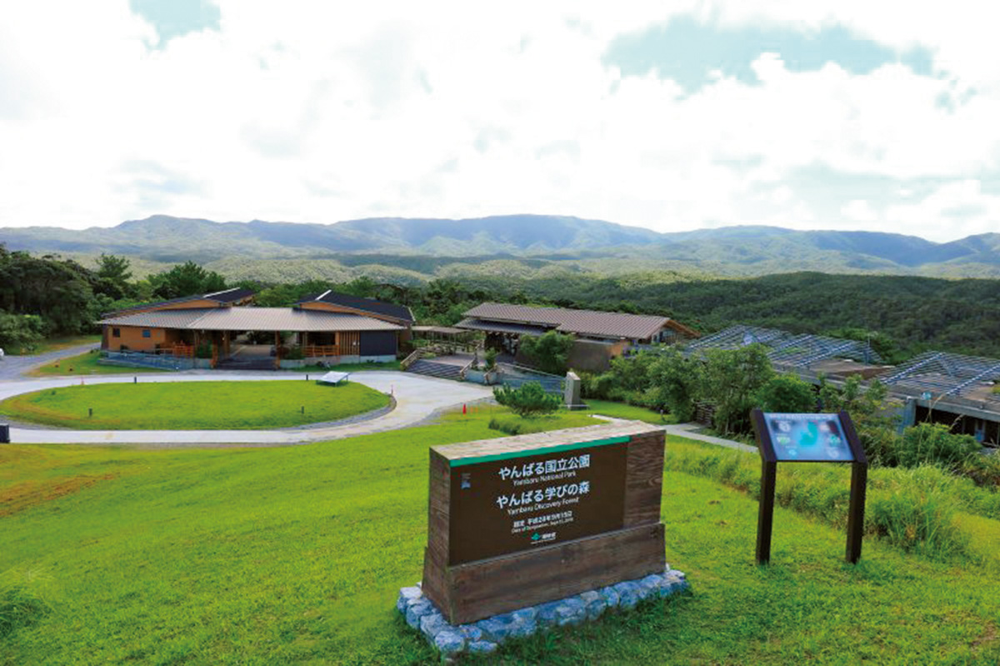
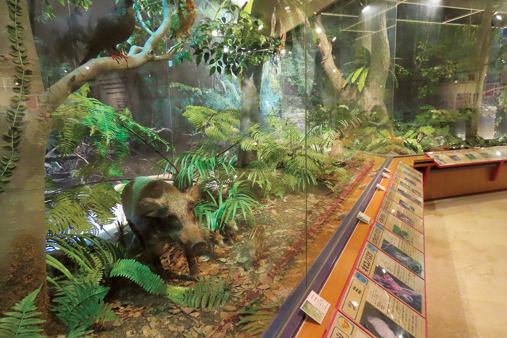
В «Ямбару манаби-но мори» можно увидеть куину, дятла ногути-гэра и рюкюскую малиновку, погулять по природным тропам, заночевать в гостевых домиках или в автокемпинге, записаться на экскурсию. Музей жизни гор и воды села Хигаси рассказывает об истории деревни. Диорама показывает лес от истоков рек до мангровых зарослей в устье, а ещё здесь есть чучела, живые змеи хабу и рюкюские кабаны.
«Ямбару манаби-но мори»
- Адрес
- префектура Окинава, село Кунигами, Аха, 1301-7
- Телефон
- +81 980-41-7979
- Часы работы
- 9:00–18:00
- Выходные
- среда
Музей жизни гор и воды села Хигаси
- Адрес
- префектура Окинава, село Хигаси, Кавата, 61-1
- Телефон
- +81 980-51-2828
- Часы работы
- 10:00–18:00
- Выходные
- понедельник (если праздник, то и вторник), праздники, День памяти павших (23 июня), бывают внеплановые
Туры
С местным гидом
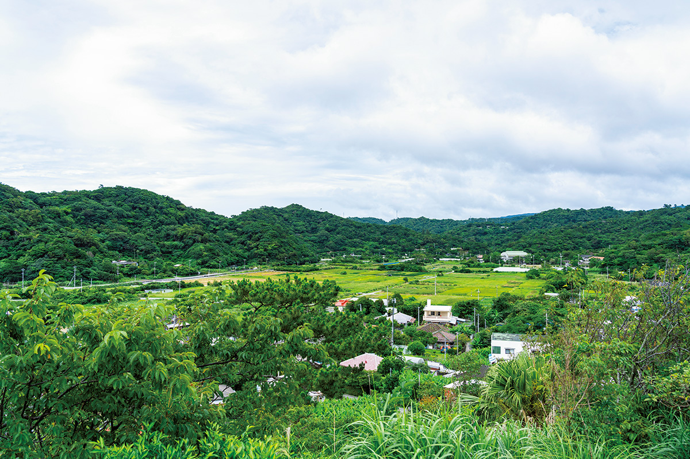
Каждое из трёх сёл собирает свои природные туры. В Кунигами туры сертифицированных гидов публикует сайт «Мори то мидзу то ясураги-но сато Кунигами». В Хигаси компания «Ямбару экспириэнс Окинава» водит каноэ по одной из крупнейших мангровых рощ острова, природному памятнику, и в труднодоступные места. В Огими спрашивайте про речной поход к водопаду Та и прогулки по лесу в визит-центре на придорожной станции «Огими».
Природные туры Ямбару
- Сайт
- iyashiyanbaru.jp (Кунигами), yanbaru-experience.com (Хигаси), yambaru-vc.com (Огими)
Еда и ночлег
Соба с горой ростков и домики у ручья
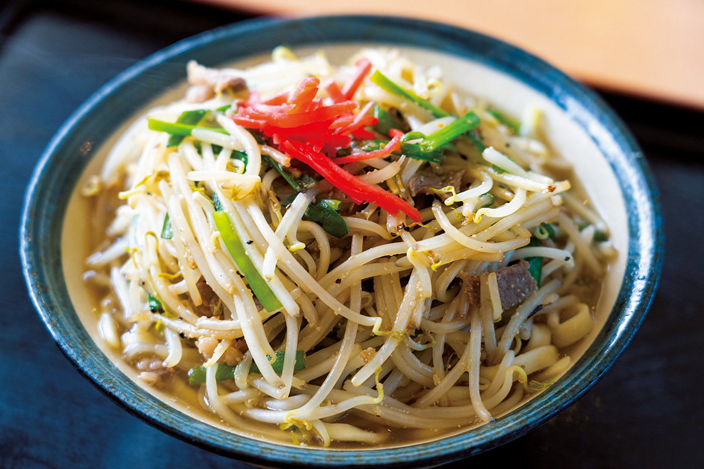
Столовую «Ямабико» на трассе 58 любят местные гиды. «Гю-соба» с говядиной стоила 600 иен в 2021 году: ростков фасоли сверху столько, что лапши не видно, а бульон, как принято на севере, чуть насыщеннее обычного.
«Ямабико»
- Адрес
- префектура Окинава, село Кунигами, Хэнна, 1700-4
- Телефон
- +81 980-41-5600
- Часы работы
- 11:30–18:00 (последний заказ 17:30, до конца лапши)
- Выходные
- воскресенье
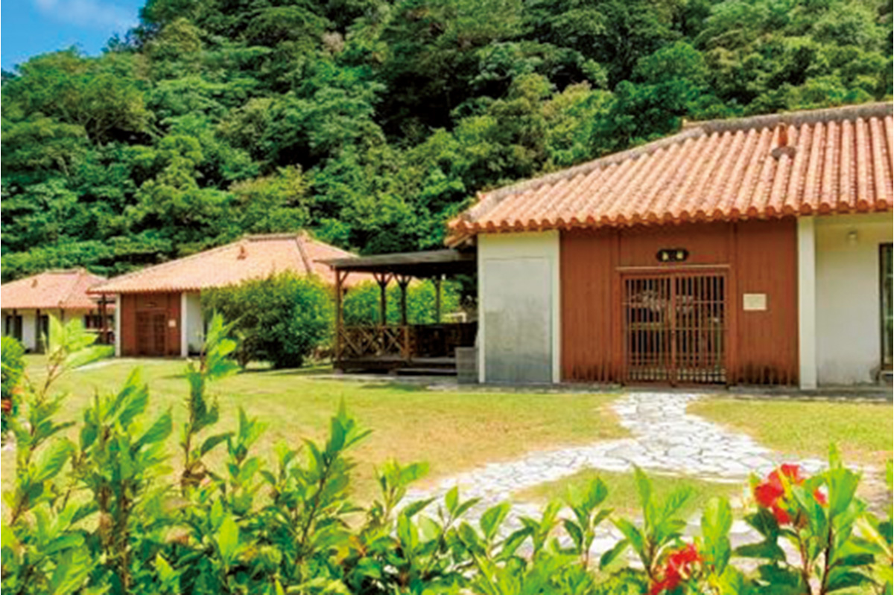
«Оку Ямбару-но сато» стоит внутри национального парка. В шести домиках в стиле старых домов есть кухни, перед ними течёт ручей, а на террасе можно жарить барбекю. Днём походы, ночью звёздное небо. Есть планы вместе с туром природного гида. Номер стоил от 4500 иен за ночь с налогом и обслуживанием в 2021 году.
«Оку Ямбару-но сато»
- Адрес
- префектура Окинава, село Кунигами, Оку, 1280-1
- Телефон
- +81 980-50-4141
- Цены / Вход
- от 4500 иен за номер (налог и обслуживание включены)
Дорога
Как добраться
От аэропорта Нахи на машине до села Хигаси около 1 часа 40 минут, до мыса Хэдо около 2 часов 10 минут. Паром из Кагосимы идёт до порта Мотобу около 22 часов 40 минут, оттуда на машине около часа до Хигаси и около 1 часа 20 минут до мыса Хэдо.
Фото: Цунэтака Симабукуро, Юкико Сираки.